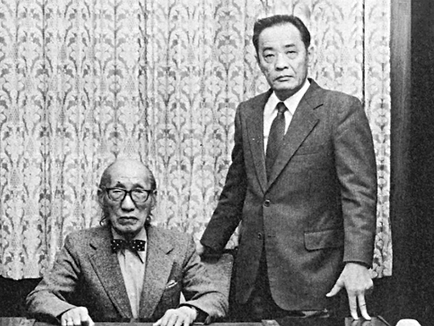

Pearl specializes in the manufacture and sale of musical instruments, specifically drums, percussion
instruments, and flutes.
I wish to thank all of our business partners, associates, musicians, and friends for their support for
our brand, products, and company.
Pearl began in 1946 in a small backyard workshop in Tokyo, Japan. From these humble beginnings, Pearl
has now grown to become the iconic brand and global leader it is today. We have continuously strived for
perfection for over seven decades, and today we stand ever more committed to making superior musical
instruments designed to inspire musicians at all levels.
Pearl’s mission is to contribute to the creation of an enriched and vibrant society through the
manufacture of superior musical instruments. To fulfill this mission, Pearl has established a vast
network of manufacturing, engineering, sales, marketing, and distribution footprints worldwide.
Our instruments are crafted with individual players in mind, enabling them to bring their ambition,
passion, and creativity to life. This legacy and our core beliefs are a commitment to musicians,
partners, and society that will continue to grow and prosper as we work together now and far into the
future.
Thank you for the trust you place in us.
Max Iishi
President and CEO
Pearl started in 1946, founded by Katsumi Yanagisawa in Sumida-ku Tokyo.Katsumi produced music stands for the local Japanese market, and as his reputation for quality and craftsmanship grew, he was soon urged to supply drums. Searching for a name synonymous with lasting value and prestige, Katsumi chose to name his company Pearl. From these humble beginnings, Pearl has grown to become the iconic global leader it is today. Pearl products have been loved and played by millions of musicians in every genre of music imaginable. From beginner to working professional to some of the most recognizable recording artists and live performers the world over, now seven decades later, Pearl instruments continue to remain faithful to Katsumi's original vision of value and prestige. In 1968, Pearl expanded production beyond percussion instruments and opened a handcrafted flute manufacturing facility at its headquarters in Chiba, Japan. Pearl now has two locations for flute manufacturing, and Pearl Flutes has grown worldwide to become highly praised by beginners, educators, and professional players for their beautiful tone and exacting craftsmanship. Pearl employs over 650 globally, including employees in Japan, the United States, Europe, Taiwan, and China. Pearl listens, and as a "Total Percussion" brand, we create instruments to meet many musical needs, including drum sets, marching and concert percussion, Latin and World percussion, electronic percussion, and many others. We care for every musician's needs and deliver unrivaled instruments developed from innovative research and development combined with world-class craftsmanship to meet those needs.
